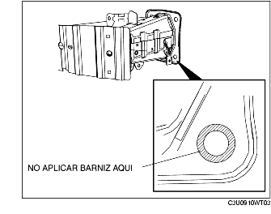

REMOCION/INSTALACION REFUERZO PARACHOQUES DELANTERO
B3E091050070W01
1. Quitar el parachoques delantero. (Véase REMOCION/INSTALACION PARACHOQUES DELANTEROS).
2. Quitar el grupo óptico delantero. (Véase REMOCION/INSTALACION GRUPO OPTICO DELANTERO).
3. Quitar la bocina. (Véase REMOCION/INSTALACION BOCINA).
4. Colocar los siguientes componentes de manera que no estorben.
-
(1) Tapa inferior
-
(2) Bomba del aceite de la dirección asistida eléctrica (LF)
-
(3) Depósito lavacristales
5. Quitar según el orden indicado en la tabla.
-
Advertencia
-
• Si el perno A (sólo uno colocado en la parte inferior izquierda) está quitado, sostituirlo con uno equivalente (número componente BPYK 50 0Z2) para asegurar una correcta conexión de masa de la bocina.
|
1
|
Perno fileteado A
|
|
2
|
Perno fileteado B
|
|
3
|
Refuerzo parachoques delantero
|
6. Instalar en el orden contrario al de la remoción.
7. Después de la instalación, comprobar el funcionamiento de la bocina.
Detalles de instalación refuerzo parachoques delantero
Reutilización del refuerzo del parachoques delantero
-
Advertencia
-
• Para asegurar una correcta conexión de masa, no aplicar barniza en el área donde la brida A del perno contacta con el refuerzo del parachoques delantero.

Instalación de un nuevo refuerzo del parachoques delantero
1. Quitar la cinta de protección del refuerzo del parachoques delantero.
-
• Si la cinta de protección se ha ya quitado, eliminar los residuos de óxido o de barniz del área de aplicación de la cinta.
2. Tras haber instalado el perno A, aplicar barniz al área del refuerzo del parachoques delantero que no está todavía barnizada.